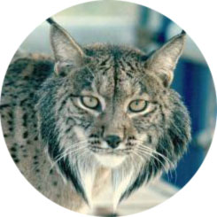
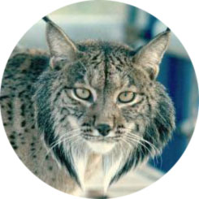

How to Help
Want to help conserve these critically endangered cats? There are many ways to help! Below you will find some of the organizations that are working to help endangered and at-risk wild cats, they also have more information about other species! Through these organizations you can donate to their initiatives or even join them in those efforts.
Panthera
Panthera is devoted exclusively to the conservation of the world’s wild cat species and their ecosystems, especially those species that are most at-risk. Most of their initiatives are aimed at big wild cats such as tigers and cheetahs, and Panthera is a leader in scientific study of wild cats and wild cats habitats. You can donate to Panthera's conservation efforts here.

International Society for Endangered Cats Canada
This is a Canadian organization that specializes in the conservation of the smallest wild cat species found all over the world (like the Scottish Wildcat.) All of their funding goes towards field research projects, public education, and breeding and habitat initiatives. You can also sign up for their newletter to receive updates on all you favorite small wild cats!

World Wildlife Fund
WWF is the world’s leading conservation organization, spanning a number of countries gloablly, and it stirves to create balance between people and nature. On their website you can find detailed information about a number of endangered and at-risk species. The WWF has also committed to the TX2 tiger initiative to double the number of wild tiger by 2022. This organization is very active in consevation efforts, and you can be too if you'd like to get involved!
Noteable Mentions: Other Endangered Cats
There are many wild cat species that are vulnerable, even if they aren't quite critical yet. Below are a few noteable mentions that are currently endangered, but close to becoming critical. Thankfully some endangered wild cat species have started to increase in numbers due to conservation efforts, such as the Iberian Lynx, but others (like the Sumatran Tiger) are not so lucky.
Sumatran Tiger
- Population: <400
- Region: Borneo and Sumatra
- Threats: Poaching and trade, deforestation, human contact
 

Iberian Lynx
- Population: 300 (and increasing)
- Region: Spain and Portugal
- Threats: Habitat loss and fragmentation (roads and infrastructure), car hits, illegal hunting and traps, decreasing food base
Github files: